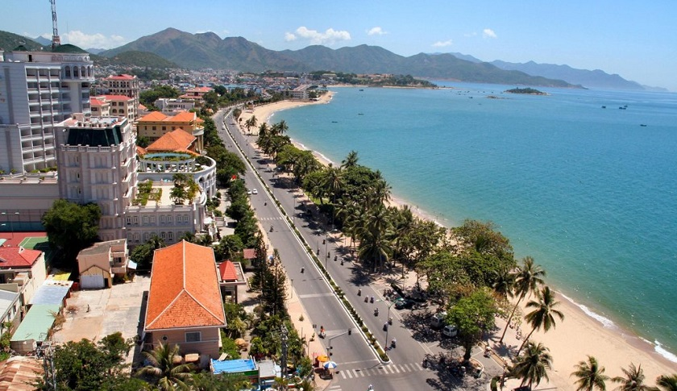

Nha Trang Nha Trang được mệnh danh là thiên đường du lịch biển của
Việt Nam, nổi tiếng với những hòn đảo thơ mộng,bãi biển xanh
biếc là điều hấp dẫn du khách từ khắp nơi trên thế giới.
Giới Thiệu Du lịch Nha Trang
Tuyến đường Trần Phú chạy dọc theo bờ biển, là con đường lớn nhất,
đẹp nhất, cũng là nơi sầm uất nhất của thành phố Nha Trang, trên
tuyến đường này có rất nhiều khách sạn, quán ăn ... bên kia đường
là bãi tắm tuyệt đẹp của Tp Nha Trang.

Video ngắn giới thiệu về Nha Trang
Liên hệ : SDT 0987384152 gmail : huuthangb@gmail.com